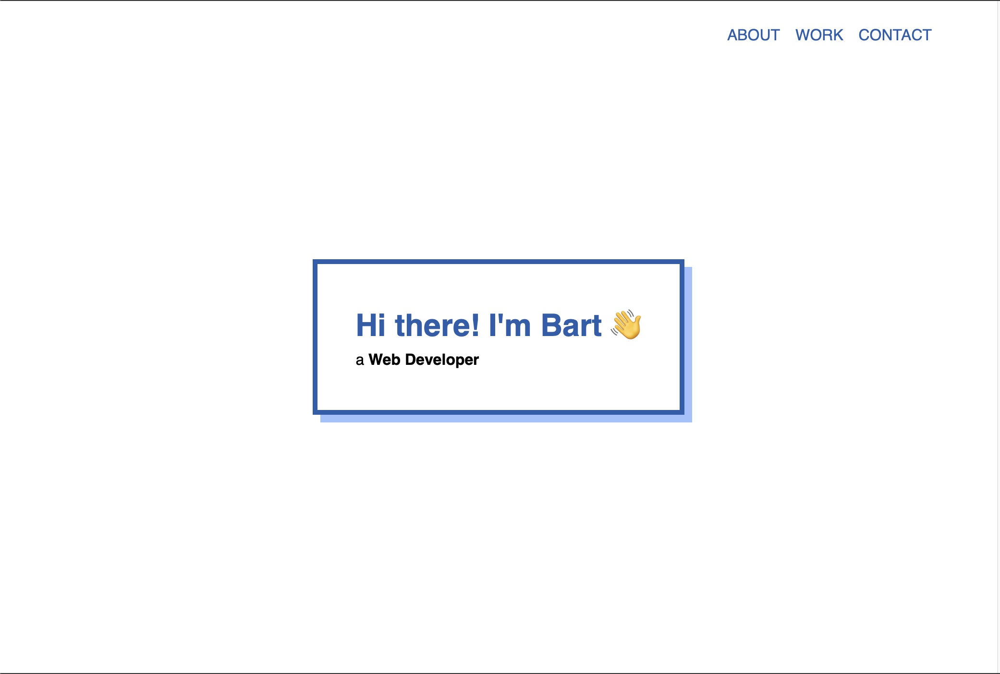
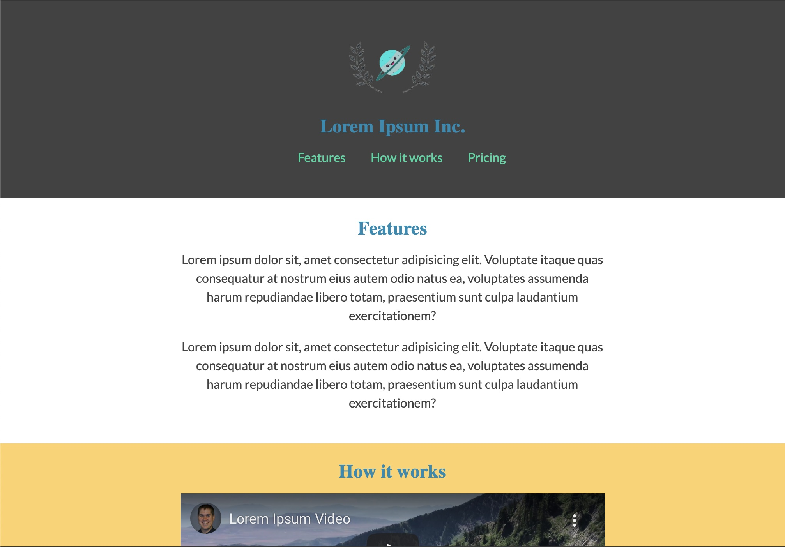

About me
I'm a self-taught web developer with a background in Network Engineering. For a long time, I've wanted to pick up web development again so I build this 'projects' website to challenge myself. I've always had an affinity towards the Web, but I pursued another career so I haven't done much for a (long) while. I recently picked it back up and am excited to learn all the new things Web Development offers.😁
Below is a list of skills and tools I have:
- Soft skills
- Fast learner
- Skills
- HTML5
- CSS3
- JavaScript*
- Tools
- Visual Studio Code
- CodePen.io
- Git
* still learning
Projects I've worked on

Personal Portofolio
A freeCodeCamp certification project for the "Responsive Web Design" course

Landing Page
A freeCodeCamp certification project for the "Responsive Web Design" course